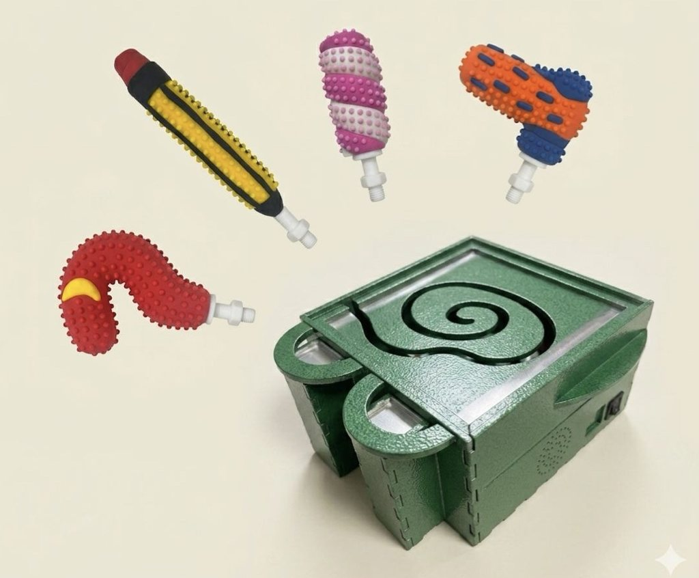
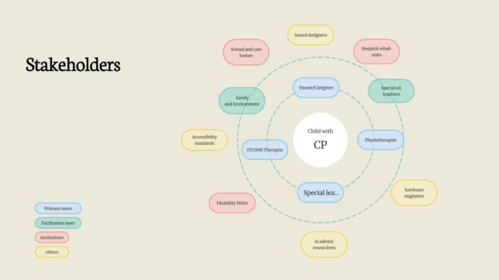
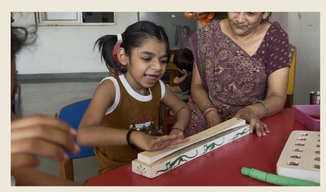
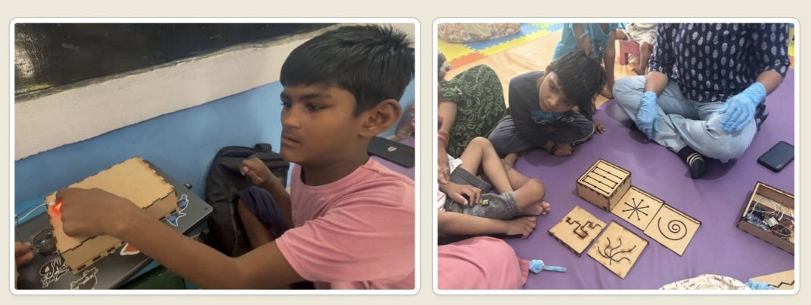
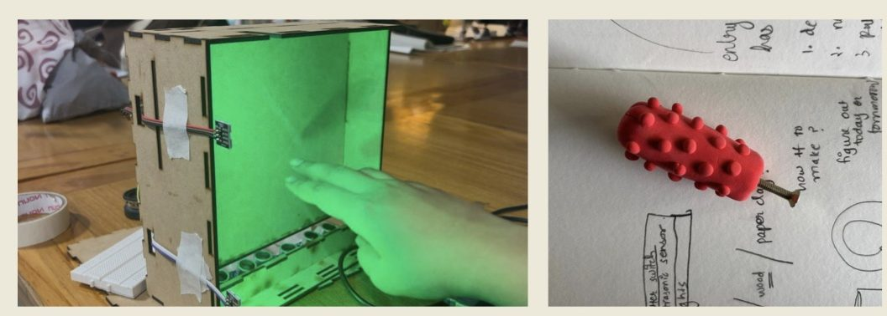
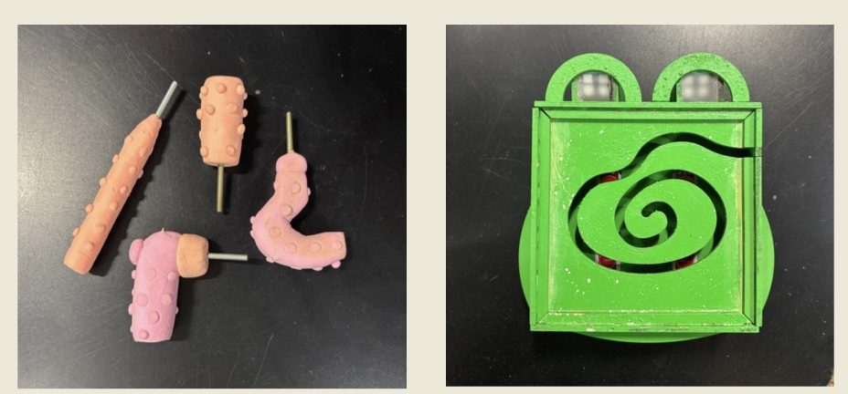
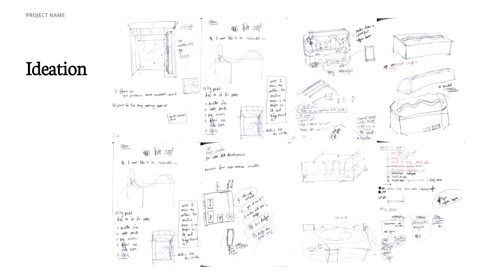
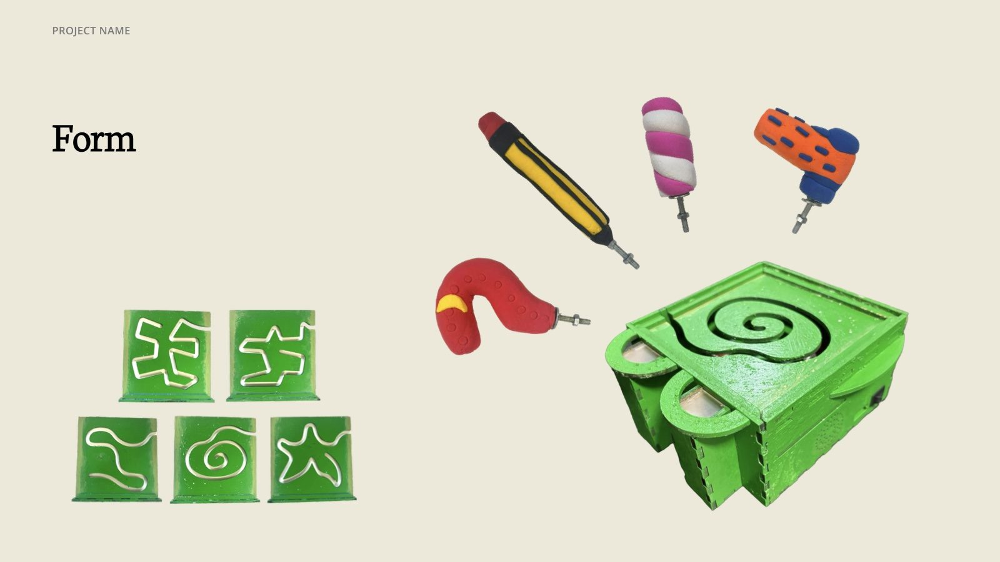

Problem solving · NMD 25, NID
FRO-GO
The way forward: an instrument for fine motor skill development in children with cerebral palsy.

What cerebral palsy asks of a child
Cerebral palsy is a kind of paralysis that results from damage to the brain. It can be spastic (affecting one side, both legs, or all four limbs), dyskinetic (involuntary movement and fluctuating muscle tone) or ataxic (poor balance and shaky, unsteady movement, especially in precise actions).
It also affects sensory integration, the body’s ability to take in touch, movement and position and respond to them. Some children are under-sensitive and seek stimulation; others are over-sensitive and avoid it. Therapy is multidisciplinary: physiotherapy, occupational therapy, sensory integration therapy and more, much of it repeated at home.
Therapists, teachers and a mother
CP children need interesting stimuli for staying focused: lights, sounds.
Vineeta, occupational therapist
Giving phones to CP children leads to them getting lost in their own worlds, because there is no interaction.
Vineeta, occupational therapist
Better gripping skills will help drastically improve quality of life.
Dr. Kavita, physiotherapist
I also spoke with Deepa Joshi, head of the intellectual disability department, and Sapna Ben, mother of seven-year-old Devansh, whose home exercises focus on grip.
Early wins matter
Initial experience decides whether a child continues. If gratification is delayed, they disengage.
Permission, not correctness
People don’t need to play correctly to engage; they need permission to participate.
Grip is the priority
Grip strengthening is a consistent focus in therapy and at home.
Screens attract, but don’t help
Screens hold attention but offer no therapeutic or interactive value.
Lights and sound
Multi-sensory stimuli are essential to sustain engagement.
Caregivers need help
Families need simple, affordable tools to continue therapy at home.
Therapy that loses the child
Children aged 2–10 with cerebral palsy consistently disengage during repetitive fine motor therapy sessions at home and in clinics, because existing tools fail to independently sustain attention, forcing caregivers to manually provide stimulation.
How might we
…design a multi-sensory therapeutic tool that independently captures and holds the attention of children with cerebral palsy during fine motor therapy, reducing caregiver burden while making sessions consistently effective and joyful across home and clinical settings?

Four rounds of making and testing
Prototype 1 · sensory reinforcement · BPA, Ahmedabad
Children played instantly with no prior learning and lit up when they became the centre of attention. They wanted more dynamic feedback, preferred a tangible object, and grew more confident when the response was instant.

Being seen
Designing for a sense of “being seen” builds engagement and confidence.
Excitement is a parameter
Sound, light or haptics should amplify action → reaction.
Zero-learning entry
Immediate playability lowers hesitation.
Responsiveness builds trust
Real-time feedback keeps children in control.
Feedback should evolve
Predictable output reduces long-term engagement.
Touch regulates
Physical engagement is therapeutic and expressive, not just functional.
Prototype 2 · sound and feedback · Prabhat Foundation, Vatva
The grip has to stay firm for varied hand strength, the pattern has to flow without abrupt breaks, lights and sounds should work together, and the instrument must stay put while the child plays.

Prototype 3 · multi-sensory feedback
Light and sound held attention well. Sensor calibration proved critical, a smaller form would be easier for small hands, and delicate forms were impractical: it has to be robust.

Prototype 4 · multi-sensory feedback + fine motor exercise

Ideation to form


Drag the handle, make a melody
Multi-sensory grounding
Textured grip, responsive lights and audio stimulate touch, sight and hearing together.
Ease for caregivers
Light and sound triggered by the child’s own movement sustain engagement without constant prompting.
Fine motor development
Dragging the handle through the slit needs controlled, deliberate movement, precision and sustained grip.
Patterns and memory
Progressive sequences of light and sound challenge memory, attention and pattern recognition.
Self-rewarding loop
Every movement gets an immediate response, so the child keeps going on their own.
A moment of joy
When a child drags the handle and a melody plays, therapy becomes an achievement worth celebrating.
Materials: metal with a textured finish, and silicone for acupressure.
Further scope
AI integration
Learn and map any song the child loves, beyond preloaded melodies.
Gross motor skills
Larger, full-body movements engaging arms, shoulders and trunk.
Gait improvement
Stepping that triggers sound and light, making gait training rewarding.
Musicality
More complex patterns and rhythms as the child progresses.